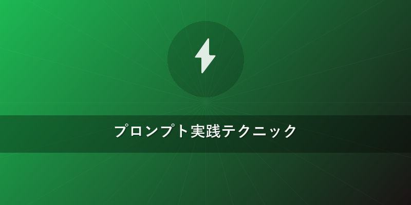

Suno 使い方 2026年最新版！AI作曲でプロ級楽曲を生成する究極ガイド
この記事でわかること
- Suno AIの登録から楽曲生成までの全手順がわかる
- 2026年最新のSuno機能と効果的なプロンプト作成術を習得できる
- AI生成楽曲の商用利用や著作権に関する法的ガイドラインを理解できる
- Sunoを使いこなし、初心者からプロまで質の高いオリジナル楽曲を効率的に生み出す方法が身につく
- 他の主要AI音楽ツールとの違いを比較し、Sunoの優位性を明確に把握できる
結論
Suno AIは2026年現在、直感的なインターフェースと高度なAI技術により、プロンプト一つで高品質な楽曲を瞬時に生成できる革新的なツールです。初心者でも簡単に始められ、商用利用も可能な範囲で自由度が高く、適切なプロンプトエンジニアリングを習得することで、プロレベルの多様なジャンル楽曲を生み出すことが可能です。特に最新のV5.5モデルでは、歌詞とメロディ、歌唱表現の連携がさらに進化し、これまでのAI音楽生成の常識を覆すほどのクリエイティブな表現力を実現しています。Suno 使い方をマスターすれば、あなたの音楽制作は新たな次元へと進化するでしょう。
本題
1. Suno AIの基本と2026年の進化点
Suno（スノ）は、テキストプロンプト（指示文）を入力するだけで、歌詞、メロディ、ボーカルを含む完全な楽曲を生成できるAI音楽生成ツールです。2026年現在、その進化は目覚ましく、特に最新のV5.5モデルでは、以下のような点が大幅に改善されています。
- 歌唱表現の自然さ: 人間が歌っていると錯覚するほどの自然なイントネーション、感情表現、ハイトーンやビブラートなどのボーカルテクニックが向上しました。
- 楽器の多様性とリアルさ: ピアノ、ギター、ドラム、シンセサイザーといった基本的な楽器に加え、オーケストラ楽器、民族楽器、最新の電子音まで、より広範でリアルな音源を生成できるようになりました。
- 楽曲の構成力: 導入（Intro）からAメロ（Verse）、サビ（Chorus）、間奏（Bridge）、アウトロ（Outro）まで、自然で説得力のある楽曲構成を自動で生成する能力が高まっています。
- 生成時間の短縮と効率性: AIモデルの最適化により、以前よりも短い時間で高品質な楽曲を生成できるようになり、ユーザーのクリエイティブフローを加速させます。
- ユーザーインターフェースの改善: より直感的で分かりやすいデザインになり、Suno 使い方を学ぶ初心者でも迷わず操作できるようになっています。
Sunoには無料プランと有料プランがあります。無料プランでは毎日一定のクレジットが付与され、AI作曲を気軽に試すことができますが、商用利用はできません。本格的な音楽制作や商用利用を考えている場合は、有料プラン（ProまたはPremier）への登録が必須となります。有料プランでは、より多くのクレジットが付与され、生成された楽曲の著作権はユーザーに帰属し、商用利用が可能になります。{{internal_link:Suno無料プラン徹底解説}}
2. Suno AIの登録から最初の楽曲生成まで（Suno 使い方 始め方）
Suno AIの始め方は非常に簡単です。以下のステップで最初の楽曲を生成してみましょう。
ステップ1: Sunoアカウント登録
まずはSunoの公式サイト（https://suno.com/）にアクセスします。画面右上の「Sign Up」または「Login」をクリックし、Googleアカウント、Discordアカウント、またはメールアドレスで登録を行います。数分で簡単に完了します。
ステップ2: クレジットの理解
Sunoで楽曲を生成するには「クレジット」が必要です。無料プランでは毎日50クレジットが付与され、1回の生成で10クレジット（2つの楽曲候補）を消費します。クレジットが不足した場合は、有料プランへのアップグレードや追加クレジットの購入が可能です。
ステップ3: 最初の楽曲生成に挑戦
ログイン後、画面左側にある「Create」タブを選択します。ここでSuno 使い方の中でも核となる楽曲生成を行います。
- 「Custom Mode」を選択: より詳細な設定が可能な「Custom Mode」を推奨します。「Explore Mode」はSunoが自動でプロンプトを生成しますが、最初のSuno 使い方としてはCustom Modeで自由に表現する方がわかりやすいでしょう。
- 歌詞の入力: 歌詞を入力したい場合は、テキストボックスに直接入力します。Sunoは歌詞の内容を解釈し、適切なメロディと歌唱を生成します。歌詞がないインストゥルメンタル曲を作りたい場合は、「Instrumental」と入力するか、歌詞欄を空欄にして「Make Instrumental」にチェックを入れます。
- スタイル記述の入力: ここがAI作曲の腕の見せ所です。「Style of Music」欄に、曲のジャンル、ムード、雰囲気、使用したい楽器などを具体的に記述します。
Pop, energetic, female vocal, synth and driving beat, uplifting.またはLo-fi Hip Hop, chill beats, melancholic piano, rainy day vibe. - 「Generate」ボタンをクリック: 入力が完了したら、「Generate」ボタンをクリックします。SunoがAIによる楽曲生成を開始し、数秒から数十秒で2つの候補曲が生成されます。
ステップ4: 生成された楽曲の確認と保存
生成された2つの楽曲候補を再生し、好みのものを選びます。気に入った楽曲はダウンロード（MP3形式）したり、シェアしたりできます。また、「Continue From This Song」ボタンをクリックすると、その楽曲の続きを生成したり、別のセクション（Bridgeなど）を追加したりすることも可能です。
3. 2026年版Sunoの高度な機能とDAW連携
Suno 使い方をさらに深掘りし、よりプロフェッショナルな楽曲制作に役立つ機能とDAW（Digital Audio Workstation）連携について解説します。
「Custom Mode」の詳細活用
「Custom Mode」は、Suno 使い方の中核をなす強力な機能です。プロンプトを工夫することで、楽曲の細部までコントロールできます。
- 歌詞のセクション指定: 歌詞を入力する際、
[Verse],[Chorus],[Bridge],[Pre-Chorus],[Outro]などのタグを使って曲の構造を指示することで、AIはより意図に近い構成で楽曲を生成します。 - 詳細なスタイル指定: テンポ（
tempo: fast）、キー（key: C minor）、コード進行（chords: Am G C F）、特定の楽器の指定（instruments: acoustic guitar, strings, subtle percussion）など、音楽理論に基づいた指示も可能です。 - 声質や歌い方の指示:
female vocal, soft and breathy（女性ボーカル、柔らかく息遣いのある）、male tenor, powerful and emotional（男性テナー、力強く感情的な）のように、ボーカルの質感を指定できます。
AI生成楽曲の展開と修正
Sunoで生成された楽曲は、単なる断片ではありません。より長尺の曲にしたり、バリエーションを作成したりする機能が充実しています。
- 「Extend」機能: 生成された楽曲は通常短いセクションで終わりますが、「Extend」機能を使うことで、その楽曲の続きをAIに生成させ、曲尺を自由に伸ばすことができます。曲の展開や構成を練る際に非常に役立ちます。
- 「Remix」機能: 既存の楽曲をベースに、スタイルや歌詞を少し変更して、新しいバリエーションの楽曲を生成する機能です。同じメロディラインで異なるジャンルを試したり、歌詞の一部を変更して別の物語を紡いだりできます。
DAWとの連携テクニック
Sunoはそれ単体で完結するツールですが、プロの音楽制作ではDAWと組み合わせることで無限の可能性が広がります。
- オーディオファイルのダウンロード: Sunoで生成された楽曲は、MP3形式でダウンロードできます。有料プランでは、さらに高品質なWAV形式でのダウンロードも可能です。
- DAWへのインポート: ダウンロードしたオーディオファイルを、Ableton Live、Logic Pro X、Cubase、Studio Oneなどの主要DAWにドラッグ＆ドロップでインポートします。
- 追加の楽器やエフェクト: Sunoで生成された楽曲は「素材」として捉え、DAW上で追加のシンセサイザー、ギター、ベース、ドラムなどを重ねたり、リバーブやディレイ、コンプレッサーなどのエフェクトを適用したりすることで、さらにプロフェッショナルなサウンドに仕上げることができます。
- ボーカルの録音: SunoのAIボーカルをガイドとして、ご自身の歌声を録音し直したり、プロのボーカリストを起用したりすることで、唯一無二のオリジナル楽曲を完成させられます。
- マスタリング: 最終的な音質調整であるマスタリングをDAW上で行うことで、楽曲全体の音圧、バランス、明瞭度を向上させ、商業リリースに耐えうるクオリティに引き上げます。

プロンプト実践テクニック
Suno 使い方をマスターする上で最も重要なのが、効果的なプロンプトエンジニアリングです。AIに意図を正確に伝え、期待通りの楽曲を生成させるためのコツを学びましょう。
1. 基本的なプロンプトの構成要素
プロンプトは、以下の要素を組み合わせることで、より詳細な指示をAIに与えることができます。
- ジャンル/スタイル: 「J-Pop」「Lo-Fi Hip Hop」「クラシックオーケストラ」「ファンク」「ロックバラード」など、音楽のジャンルを具体的に指定します。
- ムード/雰囲気: 「明るい」「切ない」「壮大」「落ち着いた」「神秘的」「激しい」など、曲が持つ感情や情景を描写します。
- テンポ/リズム: 「アップテンポ」「ゆったりとした」「グルーヴィーな」「軽快な」など、速さやリズム感を指示します。
- 楽器指定: 「ピアノ、ドラム、ベース、シンセサイザー」「アコースティックギターとストリングス」「フルートとハープ」など、使用してほしい楽器を具体的に記述します。
- ボーカルの指定: 「男性ボーカル」「女性ボーカル」「子供の声」「コーラス」「ラップ」など、ボーカルの有無や性別、歌い方を指定します。
- エフェクト/音像: 「リバーブが効いた」「ディストーションギター」「空間的な広がり」「サイレンの音」など、音響効果や特定のサウンドを指定します。
2. 効果的なプロンプトの書き方と例 (Custom Mode向け)
良いプロンプトは、具体性と簡潔さのバランスが取れています。AIが理解しやすいように、キーワードを絞りつつ、情景を想起させる表現を心がけましょう。
- 具体性と簡潔さのバランス: 情報を詰め込みすぎず、最も伝えたい要素を優先します。例えば、「エモい」よりも「切なく情熱的な」といった具体的な表現を使います。
- 複数要素の組み合わせ: 複数の要素を組み合わせることで、より複雑で詳細な楽曲イメージをAIに伝えられます。
プロンプト例1: ポップソング
[Verse]
夜空見上げれば 星が瞬く
君との思い出が 胸を締め付ける
[Chorus]
夏の終わりのメロディ 忘れられない
永遠に輝く この愛を歌う
[Style]
J-Pop, upbeat, female vocal, synth-pop, dreamy atmosphere, driving beat, nostalgic, with a catchy chorus.
プロンプト例2: シネマティックなインスト曲
[Instrumental]
Grand orchestral piece with epic strings, powerful brass, thunderous percussion, building tension, then resolving into a hopeful, soaring melody. Suitable for a movie soundtrack, dramatic and inspiring.
プロンプト例3: Lo-Fi Hip Hop
[Instrumental]
Lo-Fi Hip Hop, chill beats, mellow piano, warm vinyl crackle, subtle bassline, relaxed, perfect for studying or a rainy day vibe. Add some distant city sounds.
ネガティブプロンプトの概念（Sunoにおける間接的な活用）
Sunoには直接的なネガティブプロンプトの機能は今のところありませんが、「避けたい要素」を明示的に書くのではなく、「望む要素」をより具体的に記述することで、結果をコントロールできます。例えば、「暗い曲は避けたい」ではなく、「明るく希望に満ちた曲」と表現する、といった具合です。{{internal_link:Sunoプロンプト上級テクニック}}
3. 著作権と商用利用のガイドライン (2026年最新情報)
Suno 使い方において、著作権と商用利用に関する理解は非常に重要です。2026年時点での一般的な見解とSunoの規約を基に解説します。
- Sunoの利用規約確認の重要性: AI技術の進化とともに法整備も進んでいますが、常にSunoの公式利用規約（Terms of Service）の最新版を確認することが最も重要です。
- 生成された楽曲の著作権:
- 有料プラン（Pro/Premier）: 有料プランで生成された楽曲は、通常、ユーザーが完全な所有権（著作権）を持ち、商用利用が可能です。これは楽曲をリリースしたり、動画のBGMとして収益化したりする際に非常に有利です。
- 無料プラン: 無料プランで生成された楽曲は、個人的な利用に限定され、商用利用はできません。Sunoが著作権を保持するか、または限定的なライセンスが付与される形になります。
- オリジナル性と既存著作物:
- AIに既存の特定の楽曲名やアーティスト名を直接指定して「〇〇風の曲を作って」と指示したり、著作権のある既存の歌詞をそのまま使用したりする行為は、著作権侵害のリスクが非常に高いです。あくまでインスピレーションとして活用し、オリジナリティを追求することが求められます。
- 生成された楽曲が偶然にも既存の楽曲に酷似した場合も、著作権侵害とみなされる可能性があります。生成後は必ず、既存楽曲との類似性がないか確認しましょう。
- 「人間の寄与」の概念: AI生成物に対する著作権保護は、国際的にまだ議論の途上にあります。多くの国では、著作権が成立するためには「人間の創造的な寄与」が必要とされています。Sunoで生成した楽曲をDAWで編集したり、人間が演奏・歌唱を追加したりすることで、より著作権保護の対象となりやすくなる可能性があります。
- {{internal_link:AI音楽生成と著作権の深い関係}}
他のAI音楽ツールとの比較 (2026年版)
Suno 使い方だけでなく、他の主要なAI音楽生成ツールとの比較を通じて、Sunoの特性とそれぞれのツールの強みを理解しましょう。2026年現在、AI音楽生成分野は激しい競争にあり、各ツールは異なる特徴を持っています。
| ツール名 | 特徴 | 強み | 弱み | 主な用途 |
|---|---|---|---|---|
| Suno | 歌詞・ボーカル生成に特化。自然な歌声と多様なジャンル、複雑な曲構成。 | 歌詞とメロディの連携、歌唱表現の豊かさ、ユーザーフレンドリーなインターフェース、曲構成力。 | インストゥルメンタル特化の細かな音源制御はUdioに一日の長がある場合がある。 | ボーカル曲のデモ制作、インスピレーション、BGM、オリジナルソング作成 |
| Udio | 高品質なインストゥルメンタル生成。細かな構造・楽器指定が可能。ボーカルも対応。 | 楽器の分離度、音質の高さ、柔軟な構造指定、リミックス機能の豊富さ、幅広いジャンル対応。 | ボーカル表現はSunoのV5.5には及ばない場合がある、Sunoに比べるとやや学習コストが高い。 | 映画音楽、ゲーム音楽、インスト曲、リミックス素材、サウンドトラック |
| Stable Audio | 優れた音質とサンプリング技術。短いループや効果音生成に強み。ボーカル非対応。 | 音楽的な整合性の高いループ生成、高品質なサウンド、テンポ・ジャンル指定の精度、サンプリング素材作成。 | 長尺の楽曲生成には向かない、ボーカル生成は非対応のため歌ものには不向き。 | 効果音、短いBGMループ、サンプルパック生成、サウンドデザイン |
| MusicFX | Google DeepMind開発。実験的で多様な音源生成が可能。長尺生成にも対応。 | 新しい音色の探求、実験的なサウンドデザイン、AIモデルの柔軟性、長尺生成も可能（試用段階）。 | 一般公開が限定的、インターフェースが複雑な場合がある、生成物の安定性に課題が見られることもある。 | サウンドデザイン、実験音楽、フュージョン、新しい音源の探求 |
補足：上記の比較は2026年時点での各ツールの一般的な傾向に基づいています。AI技術の進化は目覚ましく、機能や性能は日々更新される可能性があります。Suno 使い方を極めることで、これらのツールと連携する可能性も広がります。
よくある質問（FAQ）
Q1: Sunoで生成した楽曲は商用利用できますか？
A1: はい、できます。ただし、Sunoの有料プラン（ProまたはPremier）を契約している場合に限ります。 無料プランで生成した楽曲は、個人的な利用のみが許可されており、商用利用はできません。常に最新の利用規約をご確認ください。特に、歌詞に著作権のある既存の歌詞を用いたり、既存の楽曲を意図的に模倣したりする行為は著作権侵害となる可能性がありますのでご注意ください。
Q2: 良い楽曲を生成するためのプロンプトのコツは何ですか？
A2: 具体性、簡潔さ、そして想像力を組み合わせることが重要です。ジャンル、ムード、テンポ、主な楽器、ボーカルの有無（男性/女性）、そして曲の雰囲気や伝えたい情景を明確に記述しましょう。例えば、「アップテンポなJ-POPで、希望に満ちた女性ボーカルが歌う、夏フェス向けの盛り上がる曲。キラキラしたシンセと力強いドラムが特徴。」のように、要素を具体的に羅列すると良い結果が得られやすいです。また、歌詞を入れる場合は、[Verse]や[Chorus]などのセクション分けを活用すると構成が安定します。
Q3: Sunoで生成された曲のクオリティはどのくらいですか？プロの楽曲として通用しますか？
A3: 2026年現在、Sunoの楽曲生成クオリティは非常に高く、特に最新のV5.5モデルでは、人間と区別がつかないほどの自然なボーカルと複雑な楽曲構成を実現しています。デモ制作、BGM、コンテンツのサウンドトラックとしては十分にプロレベルで通用します。 しかし、音楽の「アート」としての深みや、人間の演奏による微妙なニュアンス、感情表現といった点では、まだAIの限界も存在します。プロの楽曲としてリリースする場合でも、最終的にはDAWで調整を加えたり、人間の手による追加の演奏やボーカルを録音したりすることで、より洗練された作品に仕上げることが推奨されます。
おすすめサービス・ツール
この記事で紹介した内容を実践するために、以下のサービスがおすすめです。
※ 上記リンクからご利用いただくと、サイト運営の支援になります。
まとめ
Suno AIは、2026年におけるAI音楽生成の最前線を走る革新的なツールです。このガイドでは、「Suno 使い方」の基本から、効果的なプロンプトエンジニアリング、そして商用利用に関する重要なガイドラインまでを網羅的に解説しました。初心者の方でもSunoの直感的なインターフェースを使えば、すぐに高品質な楽曲を生み出すことができます。
音楽理論の知識がなくても、Sunoはあなたのクリエイティブなアイデアを形にする強力なパートナーとなるでしょう。AI生成楽曲の著作権と商用利用の規約を正しく理解し、他のAI音楽ツールとの比較を通じてSunoの強みを最大限に活用することで、あなたは新たな音楽制作の可能性を無限に広げることができます。
さあ、今日からSuno AIを使って、あなただけのオリジナル楽曲の世界を創造しましょう！